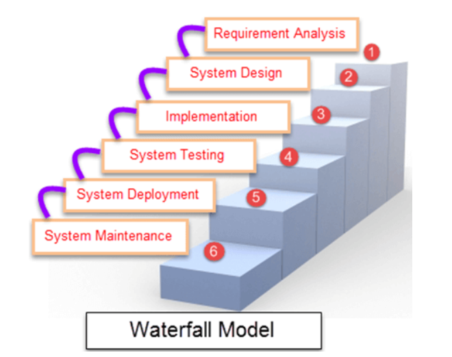
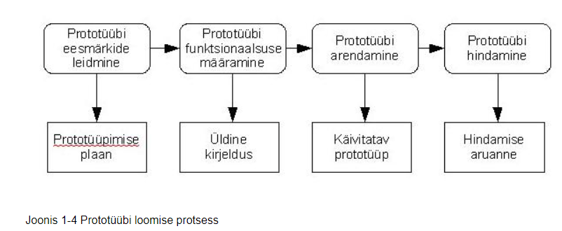

Koskmudel (ka klassikaline mudel) on esimene kirjeldatud tarkvarasüsteemi elutsükli mudel, mis lähtus tavalistest tootmisprotsessidest ehituses, mehhaanikas vms. Mudeli kirjeldas Winston W. Royce 1970. aastal.
Koskmudel on kõige vanem ja kõige rohkem kritiseeritud protsessimudel
Põhiidee kohaselt jagatakse tegevused nii, et iga tegevus toimub jadamisi eraldi etapina. Royce jagas protsessi järgmisteks põhietappideks:
1. Nõuete määratlemine. See etapp võib olla ka jaotatud kaheks - süsteemi analüüs (kõik see, mis konkreetset tarkvara ümbritseb) ja nõuete analüüs. Dokumenteeritakse süsteemi käitumine, jõudlus, liides jne
2. Süsteemi ja tarkvara kavandamine. Keskendub põhilistele programmi omadustele nagu andmestruktuurid, tarkvara arhitektuur, liideste omadused ja protseduurilised ning algoritmilised detailid. Projekti kvaliteeti on võimalik hinnata. Tulemus dokumenteeritakse.
3. Teostus ja moodulite testimine. Projektis kirjeldatud süsteem programmeeritakse moodulite ja programmide kogumina ja need testitakse eraldi. Mida detailsem on projekt, seda lihtsam ja mehhaanilisem saab olla teostuse etapp.
4. Integratsioon ja süsteemi testimine. - programmid ja moodulid integreeritakse ning testitakse kogu süsteemi, peale testimist antakse toode kliendile. Testimisel keskendutakse nii loogilistele detailidele kui ka sellele, kas süsteem oma funktsionaalsuse osas nõudeid täidab (valideerimine).
5. Kasutamine ja hooldus - on tavaliselt kõige pikem faas. Süsteemi muudetakse, kui kasutajad avastavad vigu, ümbrus ja töökeskkond muutuvad või klient vajab uut funktsionaalsust. Faas kordab kõiki eelnevaid faase olemasoleva süsteemi muutmise raames.
Iga faasi tulemiks on üks või mitu dokumenti, mis kinnitatakse. Järgmine faas ei tohiks alata enne, kui eelmine on lõpetatud. Faasidel on teatav ülekate ja info edastamine ühest teise.
Koskmudel on sobilik suurtele süsteemidele, mida arendatakse mitmes erinevas kohas korraga. Sel juhul lubab eelnev korralik planeerimine töid paremini koordineerida

Iteratiivne arendus on nö muutmisstrateegia, kus nähakse ette olemasolevate süsteemi osade ümbertegemine ja parandamine.
Alternatiivne strateegia oleks planeerida tegevused selliselt, et kõik tehtaks õigesti esimesel katsel
Ian Sommerville järgi on iteratiivne arendusmudel pigem üldine nimetus mitmele nn hübriidmudelile (sh inkrementaal- ja spiraalmudel). Sõna "iteratiivne" rõhutab seda, et tegevused selles mudelis korduvad.
V mudel on väga distsiplineeritud SDLC-mudel, milles iga arendusfaasiga paralleelselt toimub testimise faas.
V-mudel on koskmudeli laiendus, milles testitakse igas etapis paralleelselt arendusega järjestikusel viisil.
Seda tuntakse valideerimis- või kontrollimudelina.
Agiilse tarkvaraarenduse levimise algus läheb 2001 aastasse, kui senise üliplaanipärase arenduse vastased kirjutasid alla "The Agile Manifesto"-le, mille kõige olulisemates punktides rõhutakse inimesele ja inimeste vahelisele suhtlemisele:
Spiraalmudelit kirjeldas esimest korda Barry Boehm oma 1986 a. artiklis.
Protsessi kulgemist kujutab spiraal. Esimene kordus võib olla näiteks seotud süsteemi teostatavuse uurimisega, teine nõudmiste kirjeldamisega, järgmine kavandamisega jne. Mitu kordust on enamasti seotud tarkvara realiseerimisega, kus tema ehitamine toimub inkrementaalselt. Kuid kindlasti ei tohiks spiraali korduseid võrdsustada tavapäraste arendusprotsessi faasidega. Iga kordus on jaotatud 3 kuni 6 sektorisse (erinevad autorid jagavad erinevalt). Iga kordus algab lähema eesmärgi kavandamise ja riskide hindamisega ning lõppeb nö kliendiga - ehk eesmärk peab saama täidetud ja kontrollitud. Sektorite töömahukus ei pruugi olla ühesugune. Boehm'i järgi on sektoreid neli
1. Eesmärkide seadmine (Objective setting) - määratakse selle faasi ehk korduse eesmärgid, piirangud protsessis, tulemused, juhtimisplaan, võimalikud riskid ning alternatiivsed strateegiad lähtudes riskidest.
2. Riskide hindamine ja maandamine (Risk assessment and reduction) - iga leitud riski jaoks tehakse analüüs, võetakse midagi ette riskide maandamiseks (nt risk, et nõudmised pole adekvaatsed: tehakse prototüüp)
3. Arendus ja valideerimine (Development and validation) - valitakse arendusmudel, mis lähtub hinnatud riskidest (mudel peab olema selline, mis riske vähendada aitab). Nt kui kasutajaliides on suurim risk, siis võib aidata prototüüpide tegemine.
4. Planeerimine (Planning) - projekt vaadatakse üle ja tehakse otsus, kas jätkata järgmisel kordusel, kui otsustatakse jätkata, tehakse järgmise faasi jaoks plaan.
Selle mudeli kõige olulisem erinevus teistest on riskidega arvestamine. Risk - so võimalus, et midagi saab untsu minna. Riskide realiseerumise tõttu ületatakse tähtajad ja maksumus, seepärast peab riskidega arvestama ning võtma midagi ette nende maandamiseks.
Prototüüp on süsteemi algne versioon, mida kasutatakse disaini võimaluste katsetamiseks ning ideede demonstreerimiseks. Prototüüpe saab kasutada erinevates arenduse faasides. Näiteks nõuete analüüsi etapil nende leidmiseks ja valideerimiseks; disaini etapil valikuvõimaluste uurimiseks ning kasutajaliidese kavandamiseks
Kasu prototüüpimisest on: parem süsteemi kasutusmugavus, täpsem ühildumine kasutaja tegelike vajadustega; parem kvaliteet ja hooldatavus ning väiksem vaev arendamisel.
Prototüübi arendamisel on oluline, et see saaks loodud kiiresti, kasutades selleks abivahendeid (kiire prototüüpimise keeled ja tööriistad). Prototüüp ei pea sisaldama kogu funktsionaalsust - ta peab keskenduma sellele, millest ei ole hästi aru saadud; prototüübis ei pea olema vigade kontrolli ning prototüüp on suunatud funktsionaalsetele nõuetele (mitte näiteks turvalisuse probleemidele)
Prototüüpimist võib teha erineval põhimõttel - näiteks ühekordne prototüüpimine (Throw away prototyping), evolutsiooniline prototüüpimine (Evolutionary prototyping), lisanduv prototüüpimine (Incremental prototyping)
